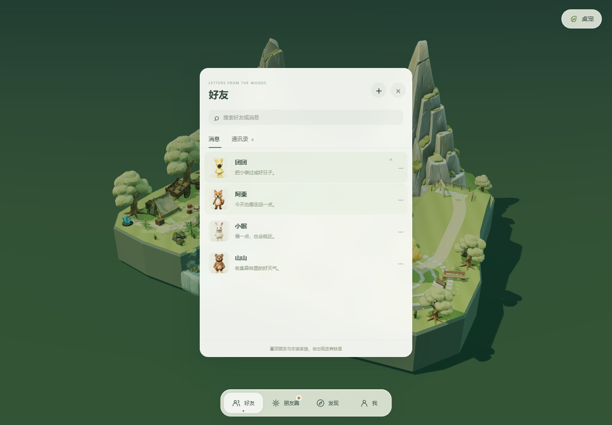
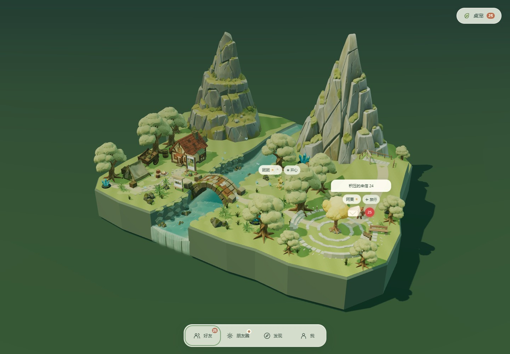
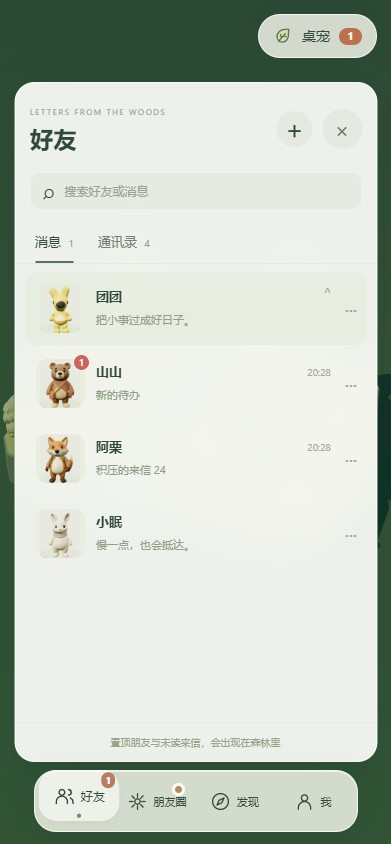

LETTERS FROM THE WOODS朋友留在列表，来信走进森林。
置顶的人常驻，有未读消息的人渐显入场。读完并关闭聊天后，人物稍作停留，再收纳回列表。四个角色的八种状态使用原有网格与程序形变制作。
打开主应用 · 实现与验收对应
32角色 × 状态实拍与姿态检查
10 + 4场景机制与动作交互检查
16.8 ms消息突发与状态切换 P95 帧间隔
消息进入场景

方形头像、置顶、最新消息、时间、草稿与未读。
红点随未读量分档增强，叠信封最多四层。八种状态，四位朋友
选择角色查看真实浏览器截图，点击图片可查看原图。坐卧为轻量风格化近似；摇摆、跳跃和步行差异请结合下方录像查看。
动作录像
保留原模型外观，面部纹理不随状态重绘。原地姿态、动作循环、短距离移动及过渡由状态调度；聊天、拖动和聚会可覆盖当前动作。
手机好友列表

触摸长按与更多按钮可置顶，界面保留 Dock。
验证数据
场景机制 · 拖动、聊天与聚会优先级 · 32 种角色状态 · 前后性能对比 · 完整姿态对照图